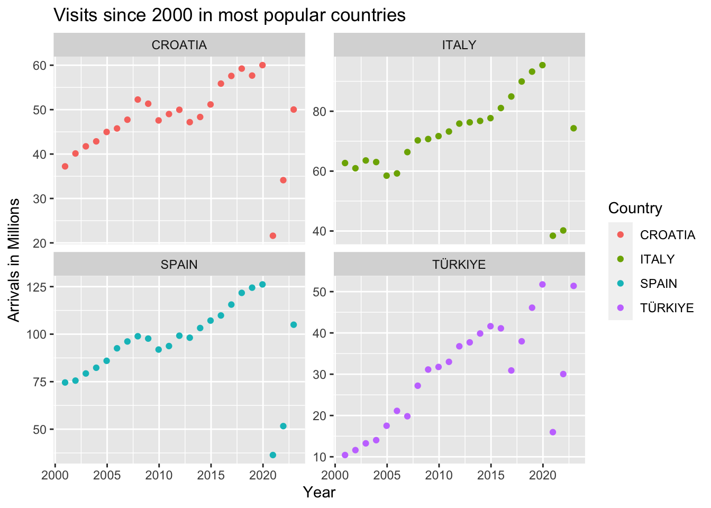
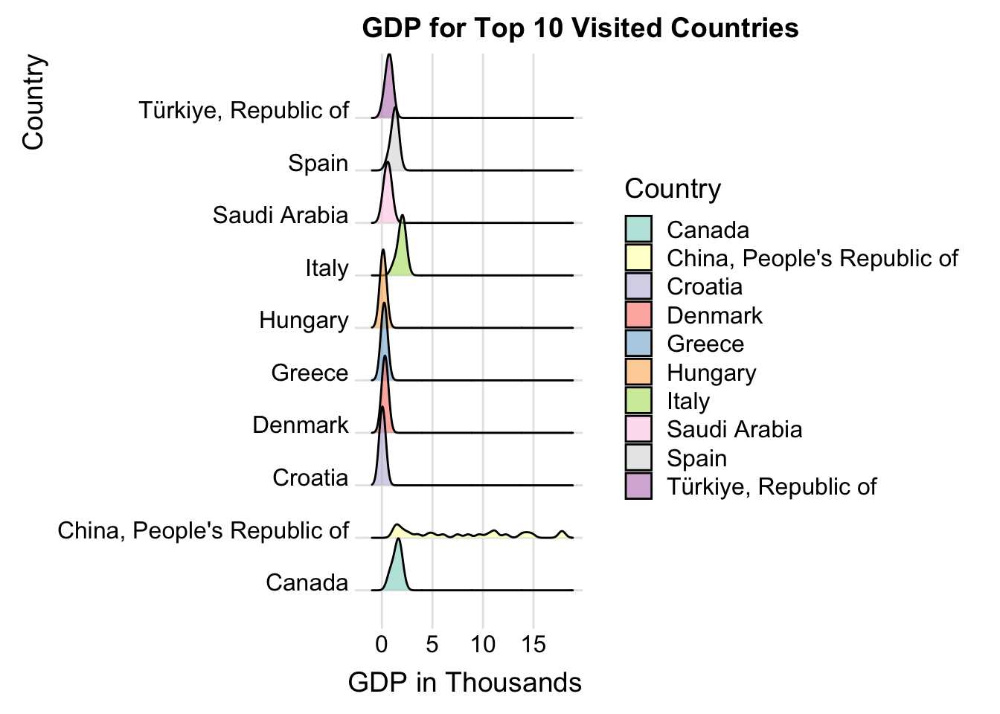
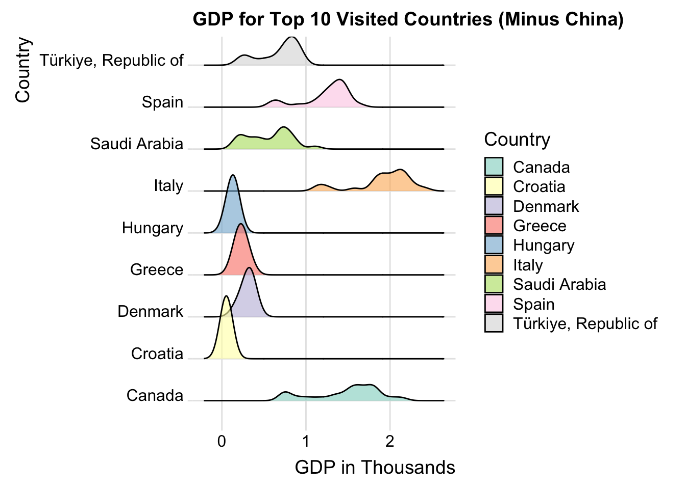
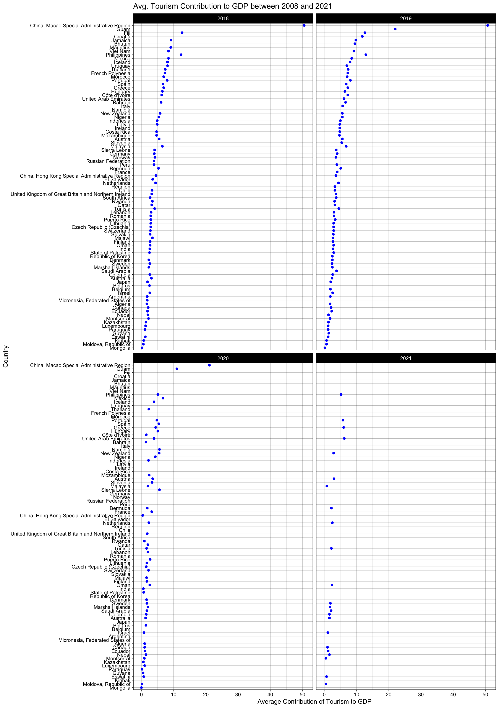
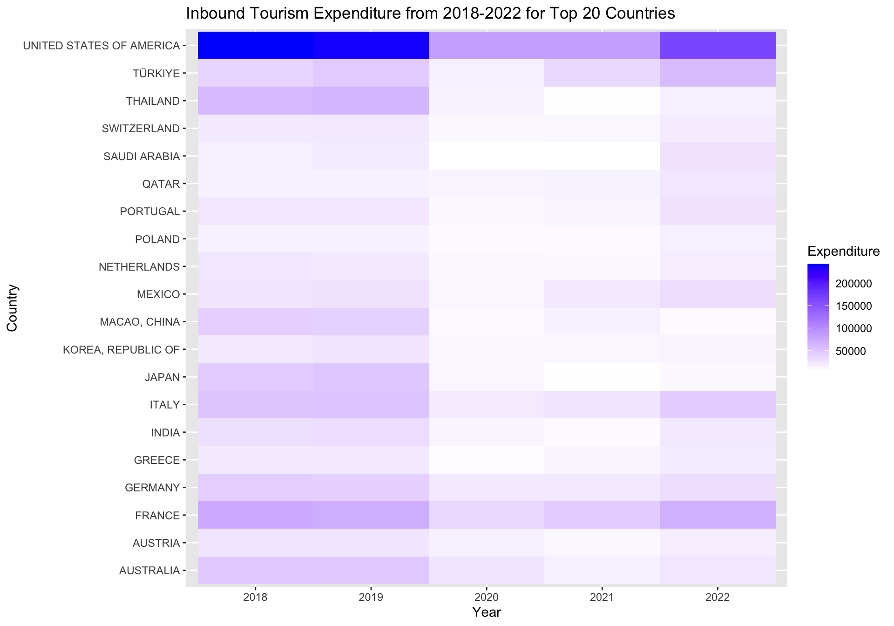
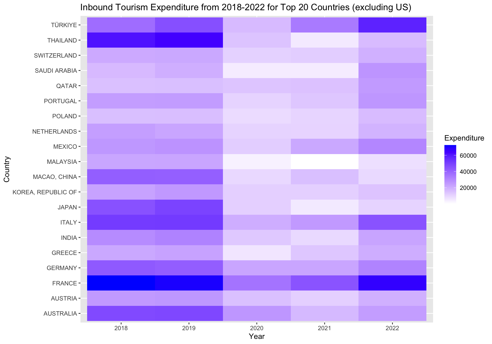
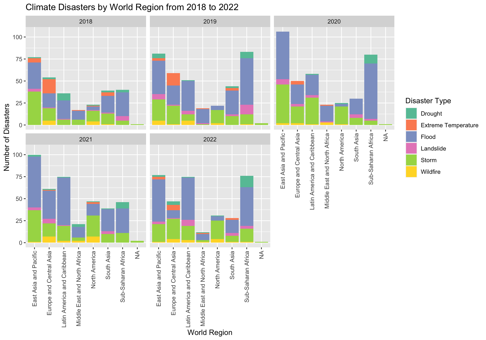
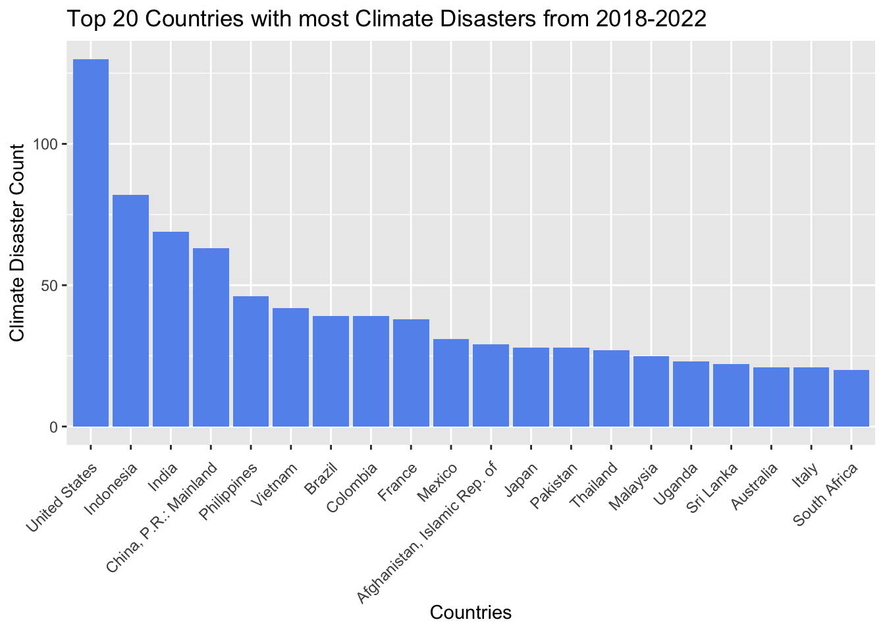
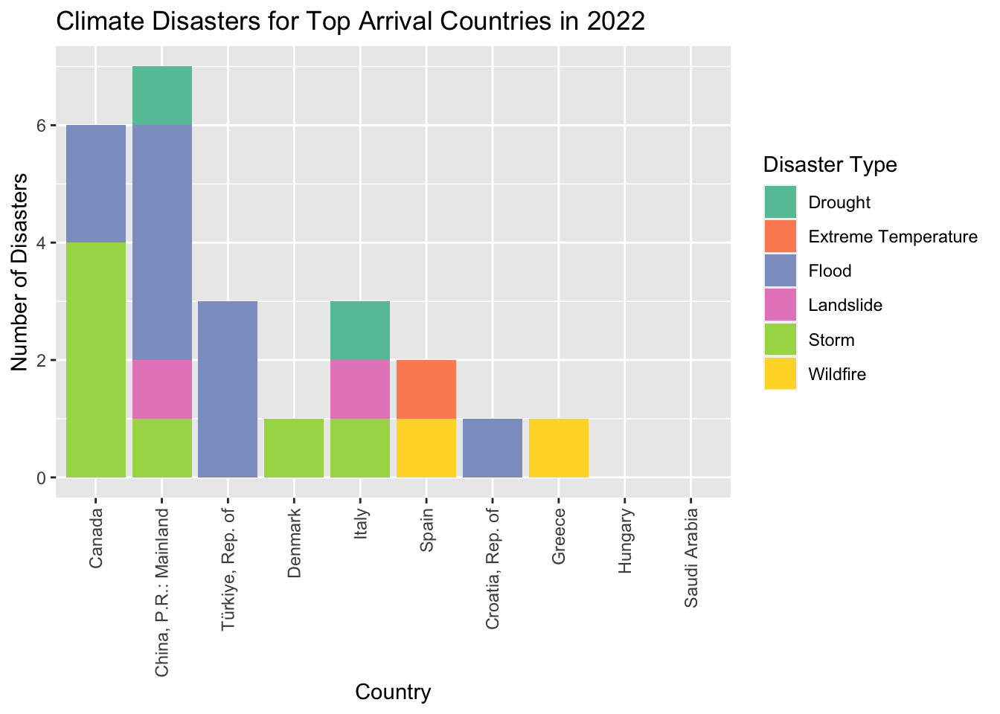
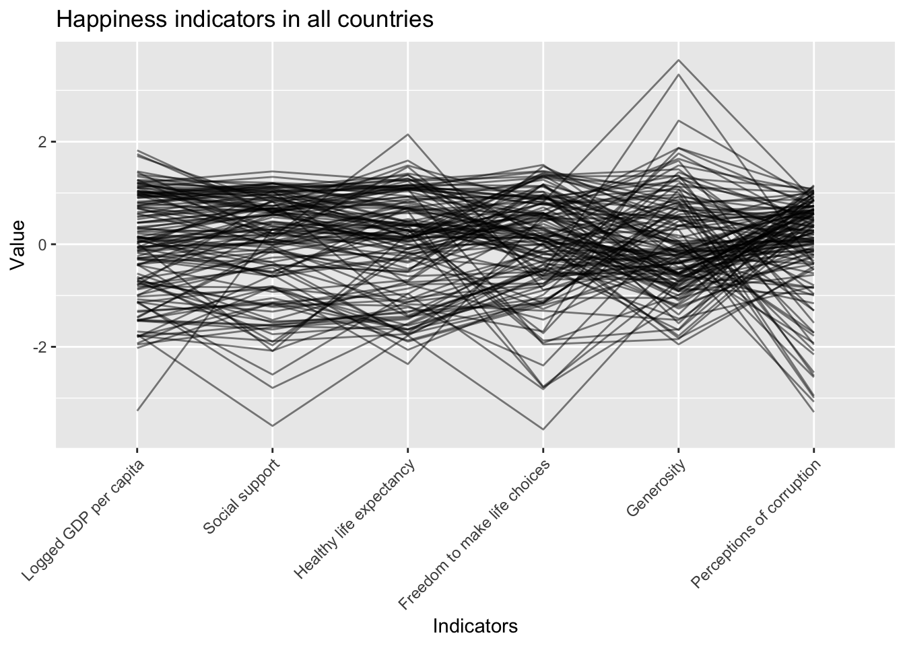

#Read data from excel#http://www.sthda.com/english/wiki/reading-data-from-excel-files-xls-xlsx-into-r#install.packages("readxl")suppressMessages(library(readxl))suppressMessages(library(tidyr))suppressMessages(library(dplyr))suppressMessages(library(ggplot2))suppressMessages(sheet_names <-excel_sheets("data_raw/unwto-all-data-download_102023.xlsx"))#create a data frame for each sheet and store them in all_dfssuppressMessages(all_dfs <-lapply(sheet_names, function(sheet) {read_excel("data_raw/unwto-all-data-download_102023.xlsx", sheet = sheet)}))
Code
#access the desired dataframe from all_dfsinbound_arrivals <-as.data.frame(all_dfs[2])#Cleaning up the data set to remove unnecessary rows and columns, and rename/change type of columnscols_to_del =c(-1,-2,-3)inbound_arrivals <- inbound_arrivals[,cols_to_del]col_names <- inbound_arrivals[2, ]inbound_arrivals <- inbound_arrivals[-2, ]colnames(inbound_arrivals) <- col_namesnames(inbound_arrivals)[names(inbound_arrivals)=="Basic data and indicators"] <-"Country"names(inbound_arrivals)[2:5] <-c("2", "3", "4", "5")inbound_arrivals <- inbound_arrivals[-1,-37]inbound_arrivals <- inbound_arrivals %>%mutate_all(~ifelse(. =="..", NA, .))columns_indices_to_convert <-10:36inbound_arrivals <- inbound_arrivals %>%mutate_at(columns_indices_to_convert, as.numeric)
Code
# Replace empty rows for country with the last non-empty value until a new value appearsinbound_arrivals <- inbound_arrivals %>%fill("Country")#Merging arrival types into one columncolumns_to_merge <-c("2","3","4","5") inbound_arrivals <- inbound_arrivals %>%mutate(Merged_Column =coalesce(!!!syms(columns_to_merge)))column_names <-names(inbound_arrivals)#moving the merged column to the front of the dataframelast_column <- column_names[length(column_names)]inbound_arrivals <- inbound_arrivals[, !names(inbound_arrivals) %in% columns_to_merge]column_to_move <-"Merged_Column"new_position <-2inbound_arrivals <- inbound_arrivals %>%select(-{{column_to_move}}) %>%mutate({{column_to_move}} := inbound_arrivals[[column_to_move]]) %>%select({{column_to_move}}, everything())
In the plots above, we see the top 10 most visited countries by total arrivals for the years 2018-2022. We study these years so that we can see the impact of the pandemic, looking two years before and two years after. Over these five years, the countries in the top ten do not shift very much. The main shift comes from China, where after 2020, visits drop significantly. Macao and Hong Kong drop off of the list entirely by 2022. China was the most visited country in 2018 and 2019, but is overtaken by Italy in 2020 and then Spain in 2021 and 2022. It is not difficult to see the impact of the corona virus pandemic in this data. Not only with countries visited, but also in the number of travelers. The most visited countries decreased by up to four times between 2019 and 2020. Some recovery in travel began in 2021, but was not notable until 2022, especially in Spain.
3.1.2 Visits from 2000 for 4 most popular countries
Code
inbound_arrivals$`1995`<-as.numeric(inbound_arrivals$`1995`)long_data <-pivot_longer(inbound_arrivals, cols =c(-Merged_Column,-Country, -Units, -Notes, -Series), names_to ="Year", values_to ="Arrivals")long_data$Year <-as.Date(long_data$Year, format='%Y')top_four <-c("SPAIN","ITALY","TÜRKIYE","CROATIA")long_data_four <-subset(long_data, Country %in% top_four)long_data_four <-subset(long_data_four, Merged_Column =="Total arrivals")long_data_four <-subset(long_data_four, Year >='2000-12-01')ggplot(long_data_four, aes(x = Year, y = (Arrivals)/1000, group = Country, color = Country)) +geom_point() +facet_wrap(~ Country, scales ="free_y")+scale_y_continuous(labels =function(x) format(x, scientific =FALSE))+labs(title="Visits since 2000 in most popular countries", y="Arrivals in Millions")

Looking at the top four most visited countries in 2022, we see similar trends in travel from 2000 to 2022. All four countries have seen a great increase in arrivals since 2000. However, Spain and Italy both already had over 60 million arrivals per year starting in 2000, and have only grown since. Croatia was already seeing almost 40 million arrivals per year in 2000, peaking at 60 million in 2019. Turkey has seen the most growth, starting at 10 million arrivals per year in 2000, and peaking over 50 million in both 2019 and 2022. In fact, Turkey is the only country that has returned to its pre-pandemic level of arrivals. All four countries saw a drastic decrease in arrivals in 2020, with 2020 numbers being the lowest recorded since 2000 for Croatia, Italy, and Spain. Turkey has had more fluctuation in travel numbers since 2017, possibly due to earthquakes as well as Covid. Croatia and Spain had small peaks in 2008, perhaps slowing down in 2009 and 2010 due to the global financial crisis. From the growth before the pandemic, we can expect these countries to continue to see more tourism in the post-pandemic world.
3.2 Tourism’s Economic Impact
Code
GDP_df <-read_excel("data_raw/imf-dm-export-20231214.xls") GDP_df<-as.data.frame(GDP_df[-1,])names(GDP_df)[names(GDP_df)=="GDP, current prices (Billions of U.S. dollars)"] <-"Country"GDP_df <- GDP_df %>%mutate_all(~ifelse(. =="no data", NA, .))long_data_GDP <-pivot_longer(GDP_df, cols =-Country, names_to ="Year", values_to ="GDP")long_data_GDP$Year <-as.Date(long_data_GDP$Year, format='%Y')
3.2.1 Ridgeline Plot of GDP for Countries with Top 10 Arrivals
Code
library(ggridges)top_ten_arrivals <-c("Spain","Italy","Türkiye, Republic of","Croatia","Hungary","Denmark","Greece","China, People's Republic of","Canada","Saudi Arabia")GDP_ten <-subset(long_data_GDP, Country %in% top_ten_arrivals)GDP_ten <-subset(GDP_ten, Year >='2000-12-01')GDP_ten <-subset(GDP_ten, Year <='2023-12-01')GDP_ten$GDP <-as.numeric(GDP_ten$GDP)ggplot(GDP_ten, aes(x = GDP/1000, y = Country, fill = Country)) +geom_density_ridges(scale =1.5, alpha =0.6) +theme_ridges() +labs(title ="GDP for Top 10 Visited Countries", x ="GDP in Thousands", y ="Country") +scale_fill_brewer(palette ="Set3")
Picking joint bandwidth of 0.335

Code
top_ten_arrivals_no_China <-c("Spain","Italy","Türkiye, Republic of","Croatia","Hungary","Denmark","Greece","Canada","Saudi Arabia")GDP_ten <-subset(long_data_GDP, Country %in% top_ten_arrivals_no_China)GDP_ten <-subset(GDP_ten, Year >='2000-12-01')GDP_ten <-subset(GDP_ten, Year <='2023-12-01')GDP_ten$GDP <-as.numeric(GDP_ten$GDP)ggplot(GDP_ten, aes(x = GDP/1000, y = Country, fill = Country)) +geom_density_ridges(scale =1.5, alpha =0.6) +theme_ridges() +labs(title ="GDP for Top 10 Visited Countries (Minus China)", x ="GDP in Thousands", y ="Country") +scale_fill_brewer(palette ="Set3")
Picking joint bandwidth of 0.0766

The ridgeline plot above shows us the distribution of GDP for the top ten most visited countries in 2022. The GDP data spans from 2000 to 2022. From this plot, we can see that China has the highest possible GDP, but has the most spread distribution. All other countries have a fairly similar distribution and median, with Italy and Canada having slightly higher medians than the other seven countries. However, with China’s unique distribution, it is difficult for us to assess the other countries’ GDP.
When we remove China from the plots, we see that Canada and Italy now have the most spread GDP distribution. Saudi Arabia, Spain, and Turkey have fairly spread distributions as well. Each of these countries have a bimodal distribution. This indicates that these countries have had a lot of fluctuation in GDP since 2000. Hungary, Greece, Denmark, and Croatia have more stark modes, but lower median GDPs than the other countries.
3.2.2 Travel Contribution to GDP from 2018-2021
Code
library(Lock5withR)tourism_gdp_raw <-read.csv("data_raw/tourism_gdp_contribution.csv")# Filter data for years 2018-2021. Only countries that have data for those 4 years will be graphed.tourism_gdp_filtered <- tourism_gdp_raw %>%group_by(GeoAreaName) %>%filter(TimePeriod >=2018& TimePeriod <=2021)#Building faceted Cleveland Dot Plotggplot(tourism_gdp_filtered, aes(x = Total, y =fct_reorder(GeoAreaName, Total))) +geom_point(color ="blue") +ggtitle("Avg. Tourism Contribution to GDP between 2008 and 2021") +facet_wrap(~TimePeriod) +xlab("Average Contribution of Tourism to GDP") +ylab("Country")+theme_linedraw()

Now, we will look at how much of a country’s GDP comes from tourism. For this metric, we only have data up to 2021, but we have seen in previous plots that tourism does not follow usual patterns after the pandemic, so we can safely study trends up to 2020, and assume they were typical for the pre-pandemic world. We can see that China’s region of Macao receives by far the highest percentage of GDP from tourism compared to any other country between 2018 and 2020. Most other countries gaining a large percentage of their GDP from tourism are smaller island nations, such as Guam, Fiji, Jamaica, etc… However, we do see some of the top ten receiving a noteworthy amount of GDP from tourism, namely Croatia, Spain, Greece, Hungary, and Italy. From this, we can conclude that many of the most visited countries do benefit economically from their tourism industries, but many smaller countries that may not be the most visited gain more positive impact on their economies from the tourism they receive.
3.2.3 Heatmap of Inbound Tourism Expenditure from 2018-2022
Code
suppressWarnings({suppressMessages(library(magrittr))suppressMessages(library(tidyverse))suppressMessages(library(RColorBrewer))expenditures_raw <-read.csv("data_raw/Inbound_Expenditure.csv")#Remove years before 2017remove_columns <-c("X2012", "X2013", "X2014", "X2015", "X2016", "X2017")expenditures_raw <-select(expenditures_raw, -remove_columns)expenditures_raw <-rename(expenditures_raw,"Country"= Basic.data.and.indicators,"2018"= X2018,"2019"= X2019,"2020"= X2020,"2021"= X2021,"2022"= X2022)expenditures_raw$`2018`<-as.numeric(gsub(",", "",expenditures_raw$`2018`))expenditures_raw$`2019`<-as.numeric(gsub(",", "",expenditures_raw$`2019`))expenditures_raw$`2020`<-as.numeric(gsub(",", "",expenditures_raw$`2020`))expenditures_raw$`2021`<-as.numeric(gsub(",", "",expenditures_raw$`2021`))expenditures_raw$`2022`<-as.numeric(gsub(",", "",expenditures_raw$`2022`))#Remove rows with NAs between 2018-2022. We only want to consider countries for which we have complete expenditure dataexpenditures_filtered <- expenditures_raw %>%filter(!is.na(`2018`) &!is.na(`2019`) &!is.na(`2020`) &!is.na(`2021`) &!is.na(`2022`))# Reshape data into long format for plottingexpenditures_pivot <-pivot_longer(expenditures_filtered, cols =c(`2018`, `2019`, `2020`, `2021`, `2022`),names_to ="Year",values_to ="Expenditure")# Calculate the mean expenditure for each countrymean_expenditure_all <- expenditures_pivot %>%group_by(Country) %>%summarise(mean_expenditure =mean(Expenditure)) %>%arrange(desc(mean_expenditure))# Select the top 20 countries including the UStop_countries_us <-head(mean_expenditure_all, 20)$Country# Filter data for the top 20 countries including the USexpenditures_top20_us <- expenditures_pivot %>%filter(Country %in% top_countries_us)#Setting Color Scheme for US Heatmapheatmap_colors_1 <-brewer.pal(n=10,name ="YlGnBu")# Plotting Heatmap with United Statesggplot(expenditures_top20_us, aes(x =as.factor(Year), y = Country, fill = Expenditure)) +geom_tile() +scale_fill_gradient(low ="white", high ="blue") +labs(title ="Inbound Tourism Expenditure from 2018-2022 for Top 20 Countries",x ="Year",y ="Country",fill ="Expenditure")})

Code
# Select the top 20 countries excluding the UStop_countries <- mean_expenditure_all %>%filter(Country !="UNITED STATES OF AMERICA") top_countries <-head(top_countries, 20)$Country# Filter data for the top 20 countries excluding the USexpenditures_top20 <- expenditures_pivot %>%filter(Country %in% top_countries)# Plotting Heatmap with United Statesggplot(expenditures_top20, aes(x =as.factor(Year), y = Country, fill = Expenditure)) +geom_tile() +scale_fill_gradient(low ="white", high ="blue") +labs(title ="Inbound Tourism Expenditure from 2018-2022 for Top 20 Countries (excluding US)",x ="Year",y ="Country",fill ="Expenditure")

We have seen how tourism effects GDP, now, conversely, we want to see how much certain countries spend on tourism. We will study the top twenty countries in terms of tourism expenditure. In the first heatmap, we can see that the spend on tourism in the United States dwarfs that of almost every country. It is possible that the United States is not noted as one of the most visited countries because, being such a large nation, there is a large amount of tourism within the country, which would not contribute to arrivals. Many other countries see more international arrivals due to their size. due to their size.
Despite that, the United States still spends the most money on inbound tourism. We can also see in the heatmap that there was a large decline in tourism expenditure in 2020 and 2021 due to Covid-19. France and Thailand had somewhat significant spending in 2018 and 2019, with only France returning to tourism spending in 2022.
When we remove the United States from the heatmap, it is easier to see which countries are spending the most on inbound tourism. France spends the most of the remaining countries, with Turkey and Italy investing a great deal in 2022. These two countries have certainly seen the payoff, being two of the top ten visited countries in 2022. Perhaps related to the trend in inbound arrivals, Macao spent a lot more money on tourism in 2018 and 2019 compared to post-pandemic years. An increase in spending since the pandemic has payed off for many countries, as Turkey, Saudi Arabia, Italy, and Greece are in the top twenty on spending and the top ten most visited. Tourism has direct economic impacts, and investing in tourists will benefit a country’s economy as well.
3.3.1 Climate Disaster Frequencies for World Regions from 2018-2022
Code
suppressWarnings({library(vcd)library(stringr)# Read in climate dataset and regions datasetclimate_raw <-read.csv("data_raw/climate_new.csv")world_regions <-read.csv("data_raw/world_regions.csv")#Replace NAs with 0sclimate_raw[is.na(climate_raw)] <-0#Recode disaster namesclimate_raw <- climate_raw %>%mutate(event_type =case_when(str_detect(Indicator, "Drought") ~"Drought",str_detect(Indicator, "Extreme temperature") ~"Extreme Temperature",str_detect(Indicator, "Flood") ~"Flood",str_detect(Indicator, "Landslide") ~"Landslide",str_detect(Indicator, "Storm") ~"Storm",str_detect(Indicator, "Wildfire") ~"Wildfire",str_detect(Indicator, "TOTAL") ~"Total",TRUE~NA# Default case if none of the above conditions are met ))#Remove years before 2018columns_to_remove <-c("F2000", "F2001", "F2002", "F2003", "F2004", "F2005", "F2006", "F2007", "F2008", "F2009", "F2010", "F2011", "F2012", "F2013", "F2014", "F2015", "F2016", "F2017")climate_raw <-select(climate_raw, -columns_to_remove)#Join datasets on Country Code## Rename columns in climate data setclimate_raw <-rename(climate_raw,Code = ISO3,"2018"= F2018,"2019"= F2019,"2020"= F2020,"2021"= F2021,"2022"= F2022)##Selecting columns from world_regions to join onworld_regions <- world_regions %>% dplyr::select(Code, World.Region.according.to.the.World.Bank) ##Join operationsuppressMessages(climate_joined <-left_join(climate_raw, world_regions))#Pivoting the years and Disaster Countclimate_pivot <-pivot_longer(climate_joined, cols ="2018":"2022",names_to ="Years",values_to ="Count")# Make sure 'event_type' is a factor to ensure proper stackingclimate_pivot$event_type <-factor(climate_pivot$event_type)#Remove Total Column for Stacked Bar Chartclimate_category_subset <-subset(climate_pivot, event_type !="Total")#Import color packagecolor_palette <-brewer.pal(n =7, name ="Set2")# Create a stacked bar chart with facetsggplot(climate_category_subset, aes(x = World.Region.according.to.the.World.Bank, y = Count, fill = event_type)) +geom_bar(stat ="identity") +facet_wrap(~Years, scales ="fixed") +# Facet by Yearlabs(title ="Climate Disasters by World Region from 2018 to 2022", x ="World Region", y ="Number of Disasters", fill ="Disaster Type") +theme(axis.text.x =element_text(angle=90, vjust =0.5, hjust =1)) +scale_fill_manual(values = color_palette)})
Loading required package: grid

As we stated with Turkey’s earthquake in 2017, climate disasters can have a large impact on tourism. The plots above show the number and types of climate disasters in different regions from 2018-2022. In each of these years, East Asia and Pacific is the region with the most climate disasters, typically followed by Sub-Saharan Africa and Latin America and Caribbean. As we have seen, the majority of the most visited countries are in Europe and Central Asia, one of the regions with less climate disasters, as well as Saudi Arabia in the middle east, where there are certainly the least climate disasters. Further, in 2018 and 2019 when China dominated the top visited country, there were more cases of extreme temperature in Europe, which have settled since 2020.
Additionally, we can confidently assume that the pandemic was the main cause of a decrease in tourism since 2020, but we should also note the increase in climate disasters across the world since 2020 as well. East Asia and Pacific went from 75 climate disasters to over 100 between 2018 and 2020. Latin America and Caribbean jumped from ~42 in 2018 to 75 in 2021. Unfortunately, it is possible that tourism is a cause for these climate disasters.
3.3.2 Top 20 Countries with the most Climate Disasters
Code
# Group by country and calculate the total number of disastersclimate_countries_total <- climate_category_subset %>%count(Country, wt = Count) %>%top_n(20, n)climate_countries_total %>%ggplot(aes(x=reorder(Country, -n),y=n)) +geom_bar(stat ="identity",fill ="cornflowerblue") +ggtitle("Top 20 Countries with most Climate Disasters from 2018-2022") +xlab("Countries") +ylab("Climate Disaster Count") +theme(axis.text.x =element_text(angle=45, vjust =0.95, hjust =1))

Looking on a more granular level, we can see the countries that have had the most climate disasters since 2018. The United States dominates again, with over 125 disasters in the past five years. We note that there are only two countries in the top ten most visited that are included in the top twenty for climate disasters: China and Italy. Like the United States, China is an enormous, geographically diverse country, so having many climate disasters in these years is not surprising. Italy, however, is much smaller, but we know that Italy is facing many issues with flooding, often tied to tourism, especially in Venice. (https://www.cnn.com/2019/11/14/europe/venice-floods-problems-intl/index.html)
Other than Italy and China, we do not see any other top visited countries in the list of most climate disasters, indicating that tourists flock to countries that do not pose climate risks, especially those that may impact travel, such as storms or floods.
3.3.3 Climate Disasters from 2022 for Countries with most Arrivals
Code
#Identify top 10 countriestop_ten_arrivals_caps <-c("SPAIN","ITALY","TÜRKIYE","CROATIA","HUNGARY","DENMARK","GREECE","CHINA","CANADA","SAUDI ARABIA")top_ten_countries <-subset(total_arrivals_2022, Country %in% top_ten_arrivals_caps)top_ten_countries <- top_ten_countries[, c(1,2,7)]climate_countries_arrivals <-tail(top_ten_countries, 10)# Selecting columns from world_regions to join oncountry_codes <- expenditures_raw %>% dplyr::select(Country, Country.Code)# Join operationsuppressMessages(climate_arrivals_joined <-left_join(climate_countries_arrivals, country_codes))# Find top 10 countries in Subset Dataframe top_arrivals <- climate_arrivals_joined$Country.Codedisasters_top10 <- climate_category_subset %>%filter(Code %in% top_arrivals)#Filtering to only 2022 disastersdisasters_top10_2022 <- disasters_top10 %>%filter(Years ==2022)#Calculate total for the top 10 Countries for 2022 only# Group by country and calculate the total number of disastersdisasters_2022_total <- disasters_top10_2022 %>%count(Country, wt = Count) %>%top_n(10, n)#Stacked Bar Chart to break down disaster typeggplot(disasters_top10_2022, aes(x =reorder(Country, -Count), y = Count, fill = event_type)) +geom_bar(stat ="identity") +labs(title ="Climate Disasters for Top Arrival Countries in 2022", x ="Country", y ="Number of Disasters", fill ="Disaster Type") +theme(axis.text.x =element_text(angle=90, vjust =0.5, hjust =1)) +scale_fill_manual(values = color_palette)

Looking specifically at the top visited countries, we can see that the country with the most climate disasters in 2022 was China with seven disasters, followed by Canada with six. These are the two largest countries by area of our top ten, so it makes sense that they would have the most climate disasters by their sheer size. Every other country had three or less climate disasters in 2022. The most common disasters in the top visited countries were storms and floods. Two countries, Hungary and Saudi Arabia, did not report any climate disasters in 2022. Further, three of the top visited countries only had one climate disaster in 2022. Clearly, the countries that most tourists visit are not risky countries when it comes to climate change.
3.4.1 Happiness Indicators in Top 10 Visited Countries
Code
suppressMessages(GGally::ggparcoord(data=happiness_df,columns =6:11, scale="std", alphaLines =0.5)+labs(title ="Happiness indicators in all countries", x ="Indicators", y ="Value")+theme(axis.text.x =element_text(angle =45, hjust =1)))

The parallel coordinates plot above shows trends in the global happiness study. From all countries studied, we can see that GDP per capita, social support, and healthy life expectancy seem to be linearly related. Economic freedom and support for citizens unsurprisingly lead to a higher life expectancy. Interestingly, there is a negative trend between freedom to make life choices and generosity, meaning countries with higher perceived freedom to make choices report lower scores for generosity, and vice versa. Similarly, there is another negative trend between generosity and perceptions of corruption. Lower generosity generally coincides with higher perceptions of corruption and vice versa. It is important to note that this data comes from polls and is averaged from every poll taken in the country, but it is still interesting to study how different indicators for happiness are generally related. Now we will see how this relates to tourism.
In the PCA chart above, we see how the chosen happiness indicators and related, and which indicators are most important in the top 10 most visited countries. We can see that Denmark and Canada have similar levels for each happiness indicator, with the highest values for generosity, social support, and logged GDP per capita. Greece has the lowest rating for generosity and logged GDP per capita, and the highest for perceptions of corruption. It is very interesting to note that when looking at logged GDP per capita, China is number nine out of ten, compared to having the top GDP in the ridgeline plot above. China also has very little social support and the second lowest health life expectancy, only better than Saudi Arabia. Spain falls somewhat central to most indicators, which is surprising as the most visited country in 2022. Perhaps the lack of extremes attracts visitors.